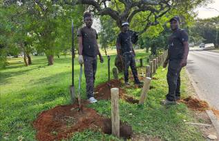
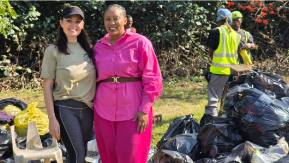

Parks & public spaces
Durban North Swimming Pool Park
The SA Asphalt team helping revamp a local public space.
Ellysa Entwistle and the SA Asphalt team giving time, practical skills and a helping hand to the places we call home.
Explore our work ↓
From cleaning up shared spaces and planting trees to improving parks and supporting neighbours, our community work brings Ellysa Entwistle and the SA Asphalt team together with residents, local groups and municipal teams.
Browse the projects and moments below. Select any photograph to view it in full.
Showing all 20 photographs
The SA Asphalt team helping revamp a local public space.
Hands-on planting and care for our neighbourhood.
Ellysa Entwistle and Bongeka working together in the community.
Working together with DSW on a community clean-up.
Smiles all round while helping care for this local natural area.
Getting involved in clearing litter from our shared spaces.
The SA Asphalt team planting trees as part of a local upliftment project.
Working together and sharing practical skills through community work.
Selecting appropriate trees for community planting.
Installing bollards around the park.
Giving everyday public spaces a colourful refresh.
A completed bus-stop mural celebrating nature.
Helping uplift the area through planting.
Hands-on maintenance of a planted roadside verge.
Clearing vegetation and loading garden material.
Supporting a neighbourhood clean-up with practical work.
Meeting with Ms Magwaza to assist during the floods.
Working together with local community partners.
A closer look at a planted verge.
The team at work around a paved public area.

Thank you to the residents, volunteers, local organisations and municipal teams who have worked alongside us.
Proud to play our part in Durban North and Ward 36.
Get in touch with Ellysa and the SA Asphalt team to start a conversation.